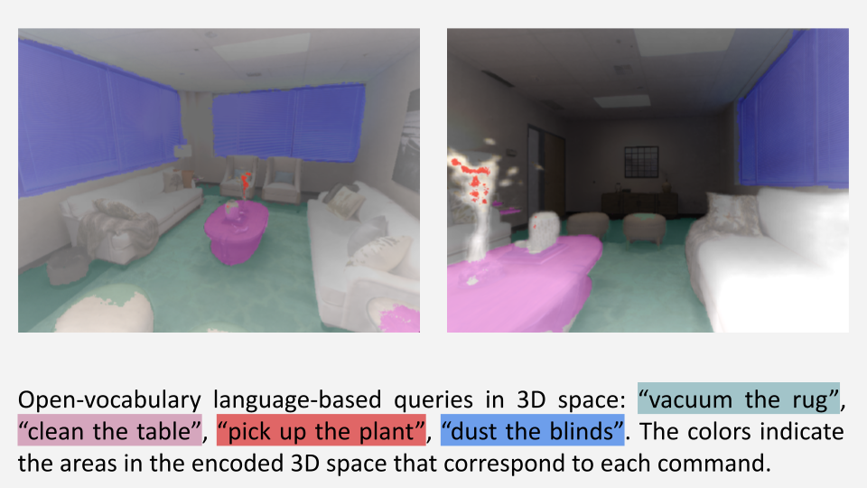
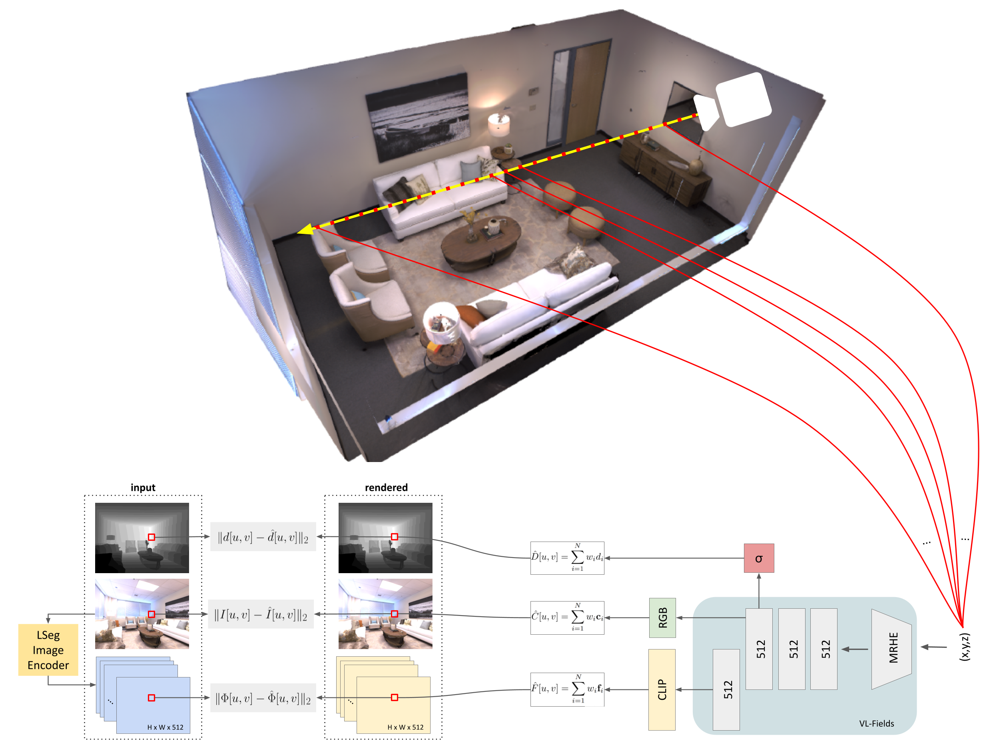

Open-Vocabulary Queries
Abstract
We present Visual-Language Fields (VL-Fields), a neural implicit spatial representation that enables open-vocabulary semantic queries. Our model encodes and fuses the geometry of a scene with vision-language trained latent features by distilling information from a language-driven segmentation model. VL-Fields is trained without requiring any prior knowledge of the scene object classes, which makes it a promising representation for the field of robotics. Our model outperformed the similar CLIP-Fields model in the task of semantic segmentation by almost 10%.
Semantic segmentation

Training Pipeline
Depth and Photometry Rendering
Jointly Encoding Depth & Photometry
Related Links
There's a lot of excellent work that was introduced around the same time as ours.
Progressive Encoding for Neural Optimization introduces an idea similar to our windowed position encoding for coarse-to-fine optimization.
D-NeRF and NR-NeRF both use deformation fields to model non-rigid scenes.
Some works model videos with a NeRF by directly modulating the density, such as Video-NeRF, NSFF, and DyNeRF
There are probably many more by the time you are reading this. Check out Frank Dellart's survey on recent NeRF papers, and Yen-Chen Lin's curated list of NeRF papers.
BibTeX
@article{park2021nerfies,
author = {Park, Keunhong and Sinha, Utkarsh and Barron, Jonathan T. and Bouaziz, Sofien and Goldman, Dan B and Seitz, Steven M. and Martin-Brualla, Ricardo},
title = {Nerfies: Deformable Neural Radiance Fields},
journal = {ICCV},
year = {2021},
}